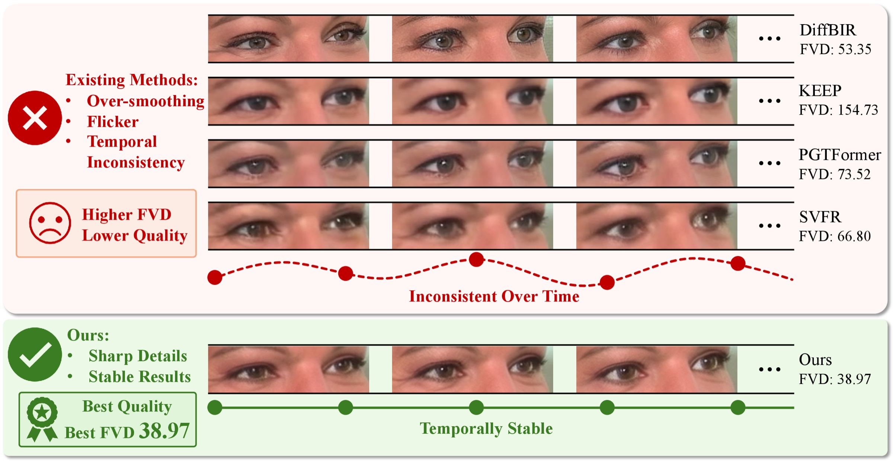
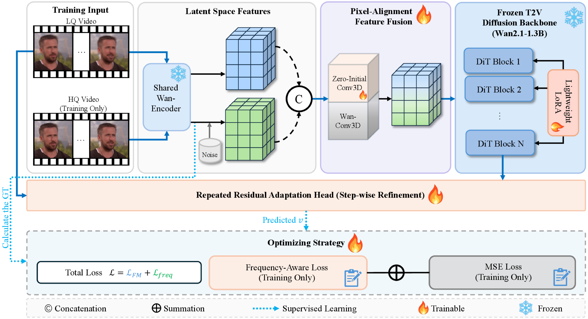
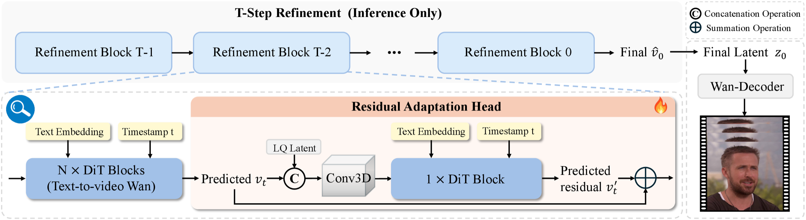
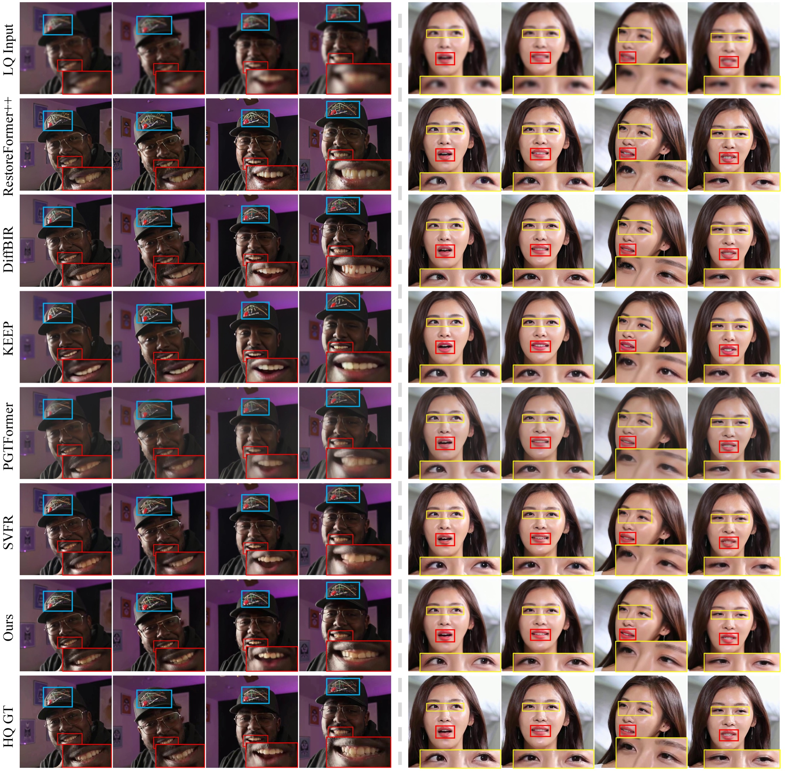
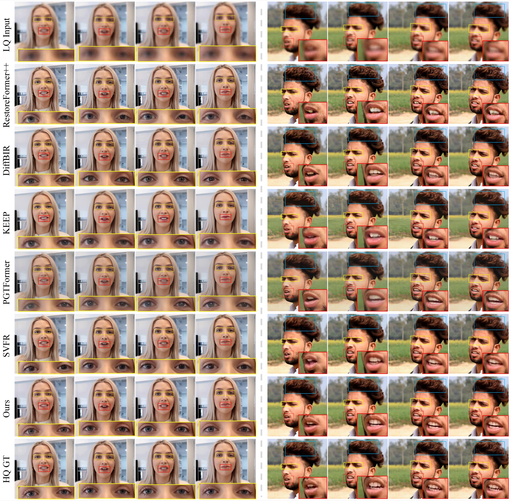
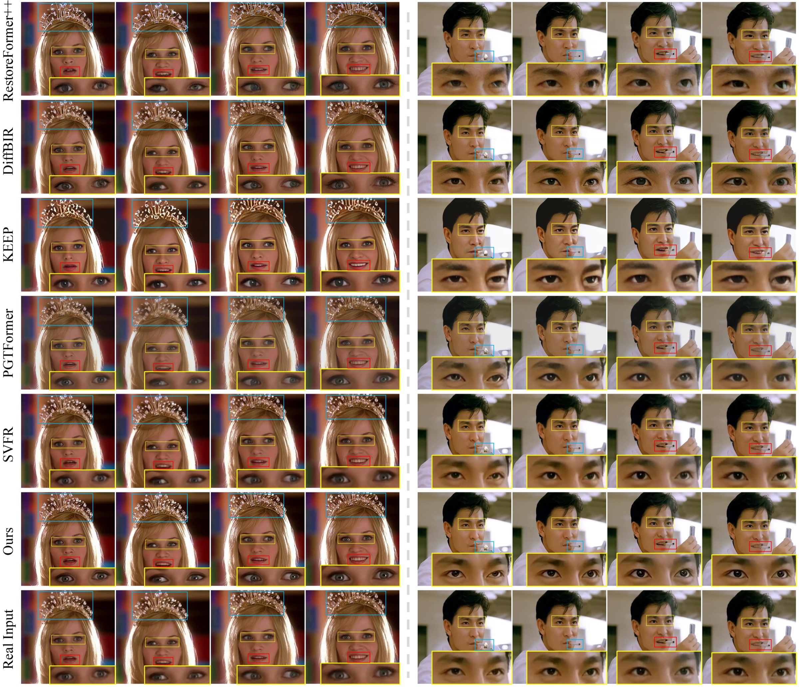
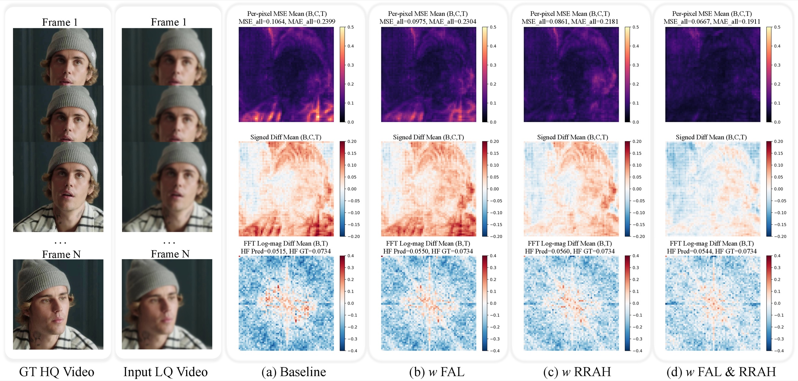

LQ Fusion + LoRA
The LQ latent enters through Wan's expanded, zero-initialized 3D patch embedding, and rank-128 LoRA adapts the frozen DiT while keeping its temporal prior.
Sharp facial details and stable faces over time, from a text-to-video diffusion prior
1United Arab Emirates University 2Ocean University of China 3MBZUAI
†Corresponding author
Under Review
Pick an example and a method. In Slider view, drag to compare that method (left) with FADRA (right); in All methods view, every result plays in sync. Slow the playback down to spot flicker.
The frame-wise restorer (DiffBIR) flickers; video restorers (KEEP, PGTFormer, SVFR) over-smooth fine eye details. FADRA keeps both detail and temporal stability.

Video face restoration (VFR) aims to recover high-quality and temporally consistent facial details from severely degraded video sequences; however, existing methods still struggle to balance spatial fidelity and temporal coherence under complex degradations. To address this, we propose FADRA, a frequency-aware diffusion framework with iterative residual adaptation specifically tailored for robust VFR. We first leverage the strong temporal consistency of a pre-trained text-to-video diffusion model and introduce lightweight LoRA adapters together with a Low-Quality (LQ) Pixel-Alignment Feature Fusion module to efficiently adapt the frozen generative prior to the VFR task. To further adapt the frozen diffusion backbone beyond LoRA-based adaptation, we introduce a Repeated Residual Adaptation Head (RRAH) for step-wise residual refinement after the diffusion backbone. To make this refinement explicitly guided by the degraded observation, RRAH further takes the LQ latent together with the current velocity prediction as input, allowing the model to repeatedly revisit LQ cues and predict residual updates at each flow-matching step. This LQ-guided repeated residual adaptation helps recover fine facial details while preserving the inherent temporal priors of the pre-trained model. Furthermore, to ensure the structural integrity of perceptually important details, we introduce a Frequency-Aware Loss that provides explicit supervision across multiple spectral bands, emphasizing visually sensitive frequency components that are crucial for perceptual quality and prone to temporal jittering. Extensive experiments demonstrate that FADRA recovers better facial structures and produces more temporally consistent videos than state-of-the-art methods, leading to clear gains in both quantitative metrics and visual perception.
FADRA keeps a Wan2.1-T2V-1.3B backbone frozen for its motion and content priors, and adds three lightweight components that turn it into a video face restorer.

The LQ latent enters through Wan's expanded, zero-initialized 3D patch embedding, and rank-128 LoRA adapts the frozen DiT while keeping its temporal prior.
RRAH fuses the velocity vt with the LQ latent zlq and predicts a residual, v̂t = vt + v′t, re-examining the degraded input at every step.
An 8×8 block DCT on the latents, reweighted by the JPEG luminance table, focuses training on the frequency bands people notice most.

Yellow eyes, red mouth and teeth, blue hats, hair and accessories. Click a figure to enlarge.



FADRA is best on all five metrics on both VFHQ and CelebV-HQ, compared with 15 image- and video-based methods.
Comparison on VFHQ and CelebV-HQ. Bold is best, underline is second best.
| Method | VFHQ | CelebV-HQ | ||||||||
|---|---|---|---|---|---|---|---|---|---|---|
| PSNR↑ | SSIM↑ | LPIPS↓ | IDD↓ | FVD↓ | PSNR↑ | SSIM↑ | LPIPS↓ | IDD↓ | FVD↓ | |
| Image-based methods | ||||||||||
| CodeFormer Transformer | 26.93 | 0.7810 | 0.2826 | 0.5173 | 177.11 | 26.44 | 0.7674 | 0.2977 | 0.5262 | 251.00 |
| RestoreFormer++ Transformer | 27.28 | 0.7921 | 0.2657 | 0.3875 | 81.14 | 26.69 | 0.7708 | 0.2807 | 0.3815 | 118.90 |
| DAEFR Transformer | 22.79 | 0.6834 | 0.3485 | 0.8044 | 819.31 | 22.25 | 0.6609 | 0.3591 | 0.7742 | 1005.01 |
| PGDiff Diffusion | 22.35 | 0.6712 | 0.4583 | 1.1174 | 828.43 | 22.82 | 0.6731 | 0.4558 | 0.9835 | 676.30 |
| DifFace Diffusion | 25.49 | 0.7315 | 0.3780 | 0.8401 | 2399.60 | 25.29 | 0.7253 | 0.3784 | 0.7484 | 2456.44 |
| DiffBIR Diffusion | 27.56 | 0.7678 | 0.2852 | 0.3569 | 53.35 | 26.83 | 0.7499 | 0.3030 | 0.3843 | 125.31 |
| OSDFace Diffusion | 24.56 | 0.7385 | 0.2948 | 0.4434 | 155.98 | 24.26 | 0.7228 | 0.3288 | 0.5020 | 452.52 |
| Video-based methods | ||||||||||
| RealBasicVSR CNN | 28.51 | 0.8160 | 0.3400 | 0.6704 | 172.09 | 27.66 | 0.7988 | 0.3536 | 0.6308 | 297.70 |
| StableVSR Diffusion | 27.79 | 0.8206 | 0.3201 | 0.6909 | 172.03 | 27.02 | 0.7891 | 0.3730 | 0.6794 | 335.82 |
| MGLDVSR Diffusion | 28.30 | 0.8271 | 0.3039 | 0.5232 | 109.20 | 27.30 | 0.7829 | 0.3766 | 0.6181 | 291.73 |
| VEnhancer Diffusion | 20.47 | 0.6903 | 0.4673 | 0.9289 | 1022.32 | 19.78 | 0.6466 | 0.4784 | 0.9265 | 1538.55 |
| STAR Diffusion | 26.16 | 0.8094 | 0.3497 | 0.4958 | 155.32 | 25.26 | 0.7798 | 0.3968 | 0.6683 | 367.40 |
| KEEP Transformer | 27.55 | 0.7876 | 0.2708 | 0.5068 | 154.73 | 26.30 | 0.7611 | 0.3056 | 0.6141 | 510.82 |
| PGTFormer Transformer | 25.73 | 0.7853 | 0.2610 | 0.3902 | 73.52 | 25.06 | 0.7646 | 0.2885 | 0.4439 | 149.25 |
| SVFR Diffusion | 26.54 | 0.7891 | 0.2815 | 0.3782 | 66.80 | 28.20 | 0.8190 | 0.2513 | 0.3545 | 52.33 |
| FADRA (Ours) Diffusion | 29.95 | 0.8576 | 0.2378 | 0.2912 | 38.97 | 28.70 | 0.8326 | 0.2421 | 0.3103 | 48.32 |
Seconds to restore a 161-frame 512×512 video on one A100 (log scale).
*One-step image model: faster, but far less temporally consistent (FVD 155.98 vs. 38.97).
10 real-world videos, 21 raters. Scores from 1 to 5.
| Method | Quality↑ | IDC↑ | TC↑ | Best vote↑ |
|---|---|---|---|---|
| RestoreFormer++ | 2.12 | 2.25 | 2.18 | 3.81% |
| DiffBIR | 3.00 | 3.02 | 2.89 | 8.57% |
| KEEP | 2.17 | 1.74 | 2.02 | 2.38% |
| SVFR | 3.35 | 3.67 | 3.60 | 16.19% |
| FADRA (Ours) | 4.36 | 4.32 | 4.31 | 69.05% |
IDC: identity consistency. TC: temporal consistency.
RRAH alone cuts FVD from 64.34 to 40.69 while adding only about 4 s of inference time for a 161-frame 512×512 video on one A100 (182 s → 186 s). The Frequency-Aware Loss is used only in training, so it adds no inference cost; combining both gives the best overall quality.
VFHQ test set.
| FAL | RRAH | PSNR↑ | SSIM↑ | LPIPS↓ | IDD↓ | FVD↓ |
|---|---|---|---|---|---|---|
| ✗ | ✗ | 27.52 | 0.8249 | 0.2581 | 0.3046 | 64.34 |
| ✓ | ✗ | 28.56 | 0.8368 | 0.2521 | 0.2944 | 58.32 |
| ✗ | ✓ | 29.67 | 0.8550 | 0.2402 | 0.2806 | 40.69 |
| ✓ | ✓ | 29.95 | 0.8576 | 0.2378 | 0.2912 | 38.97 |
VFHQ test set.
| Target | PSNR↑ | SSIM↑ | LPIPS↓ | IDD↓ | FVD↓ |
|---|---|---|---|---|---|
| Baseline | 27.52 | 0.8249 | 0.2581 | 0.3046 | 64.34 |
| FAL on v | 27.45 | 0.8400 | 0.2414 | 0.3430 | 72.86 |
| FAL on z | 28.56 | 0.8368 | 0.2521 | 0.2944 | 58.32 |
The latent z carries facial structure directly, so frequency supervision there is more meaningful than on the velocity v.

@article{jiang2026fadra,
title = {FADRA: Frequency-Aware Diffusion with Residual Adaptation for Video Face Restoration},
author = {Jiang, Jin and Wang, Jia and Hu, Panwen and Zhao, Weiran and Liao, Shengcai},
journal = {arXiv preprint arXiv:2607.06389},
year = {2026}
}